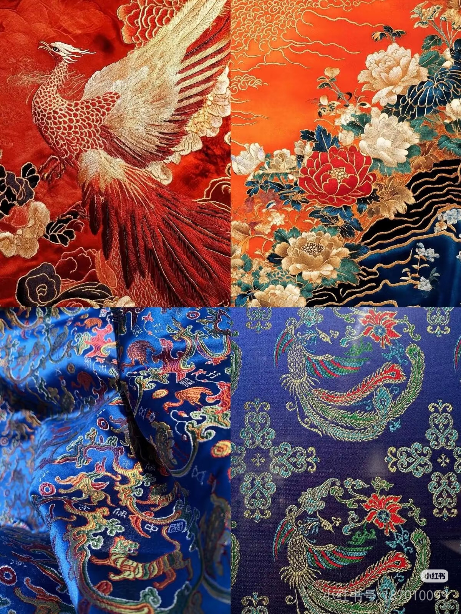
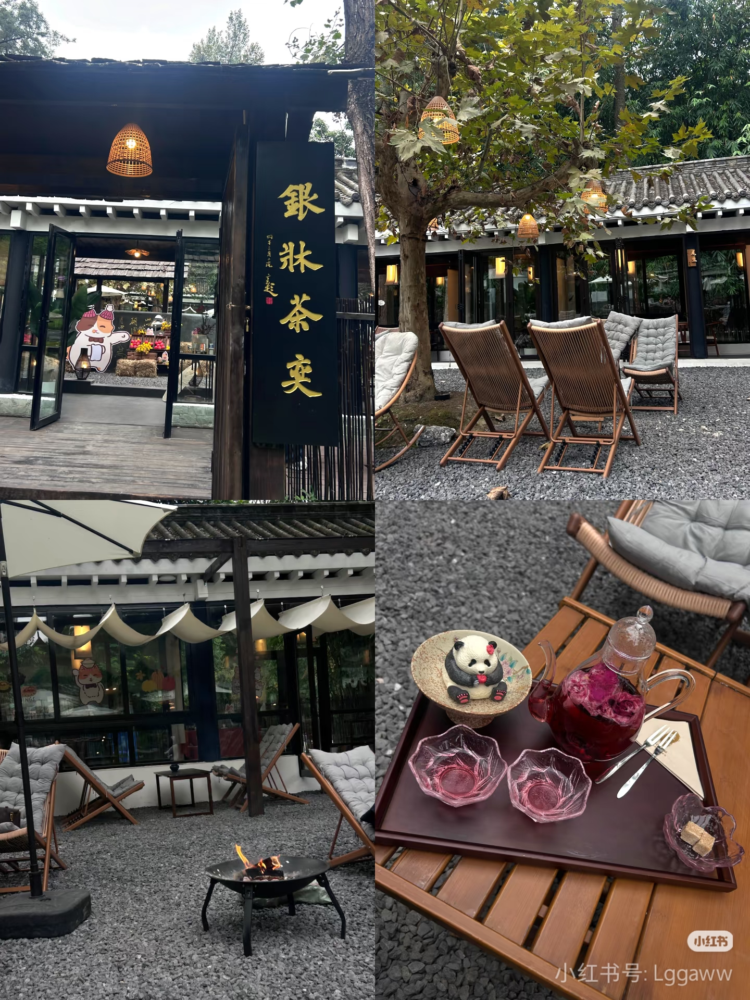
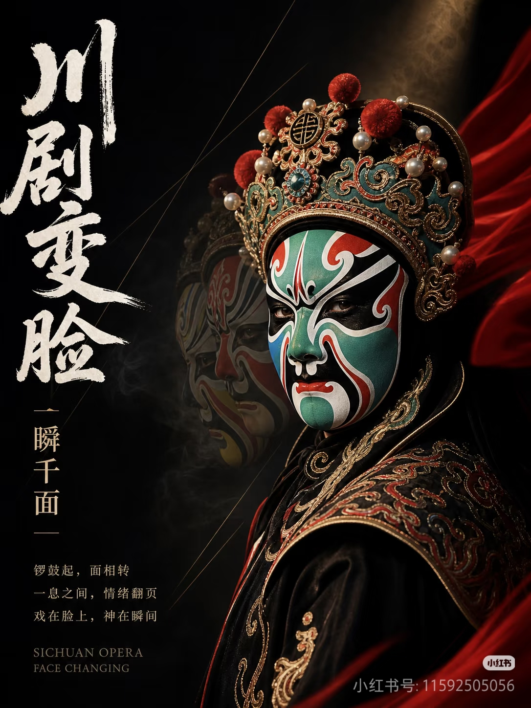

ROOTED IN HISTORY
一城文脉，万般风雅
成都既有金沙遗址、三国文化留下的厚重印记，也有茶馆、公园里的松弛日常。传统在这里不是远观的风景，而是鲜活的生活。

01 / SILK BROCADE
蜀锦织造
经纬交织，纹样绚丽。蜀锦承载着古蜀匠人的巧思，也见证丝路往来的千年历史。

02 / TEA HOUSE
茶馆闲情
一把竹椅、一盏盖碗茶，成都人把闲适过成日常，也把人与人的亲近留在茶香里。

03 / SICHUAN OPERA
川剧与变脸
高亢婉转的唱腔、精妙的身段与瞬息变幻的脸谱，展现巴蜀艺术的鲜活魅力。
文化不只在典籍里，也在一盏茶、一段戏、一寸锦纹之间。
于日常处，见蜀地风雅